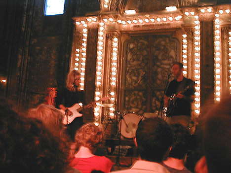
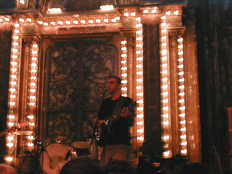
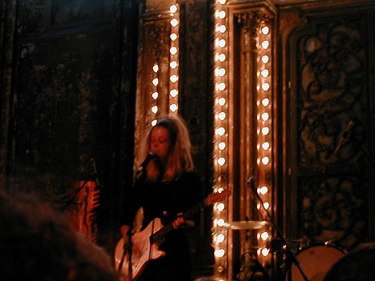
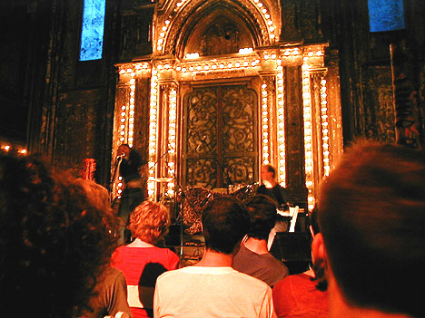
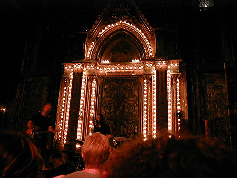
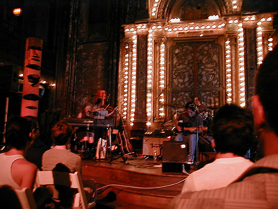
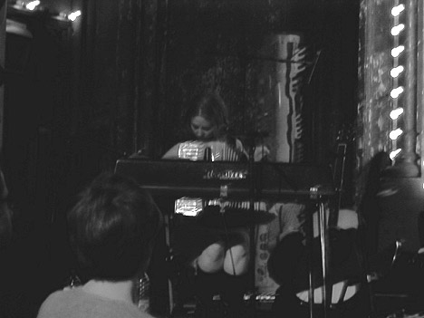

Big Orange Crayonmusical thingsthe Secret Stars, His Name is Alive, Low and Ida at the Orensanz Foundation, NYC July 18th, 2000 There are pictures at the bottom! Now I can die happy. I've been wanting to see the Secret Stars for as long as I've been actually going to shows, and now I've finally done it. I had to take a three hour train ride to New York City and then stay at a hotel that is easily the grimiest, scariest place I've ever been to, but I went. The Orensanz Foundation is a very pretty building. It's an old church that has the strange and beautiful look of having many different coats of paint that all fell off. I'd love to go to more shows there, if only it wasn't so far away from home... The Secret Stars were the first ones to play. It was their first show in two years and I thought that they were wonderful. They started with a new song about Abner Louima and played a lot of my favorites, including "wait" and "shoe in" and "(whisper:eye)" (or "eyelashes" it's kind of listed as both on the albums)... They even played "Not About A Birthday" which is my favorite song off of Geoff Farina's Usonian Dream Sequence. I was a happy boy. I don't know if they plan to keep doing shows, but if you ever get a chance to see them, you have to. No, you don't have a choice. They're my favorite band ever. Everything about them is beautiful. His Name Is Alive was the second band to play. It was my first time ever hearing them and I was really impressed. If band comparison alchemy is necessary, I'd say that they were a combination of Ida and Cinnamon. Anyway, they played wonderful, soul-sey slow songs with lots of witty banter in between. They ended on an awesome cover of Van Morrison's "Moondance". Their singer is mesmerizing. Low came on next. Their set was particularly beautiful and soft. I hadn't really listened to them much before, barring a few songs on compilation albums, but I think I'll do a little better from now on. Ida was the last band to play and they were spectacular. They were another band that I had been waiting forever to see. Even though they had to rush in order to finish before eleven, they played a wonderfully relaxing, absorbing set. Which is good because being in New York City always makes me nervous. This was (among other things, like a benefit for the South Brooklyn Legal Services HIV Project and the one thing that kept me going through summer) also the release show for their new album that I listened to on the train ride back. It's stunning as well. Pictures!: the Secret Stars  Geoff and Jodi  Geoff Farina  Jodi Buonanno His Name is Alive  Low  Ida   (this one just came out all red, so I thought it looked better black and white) It's Liz. |